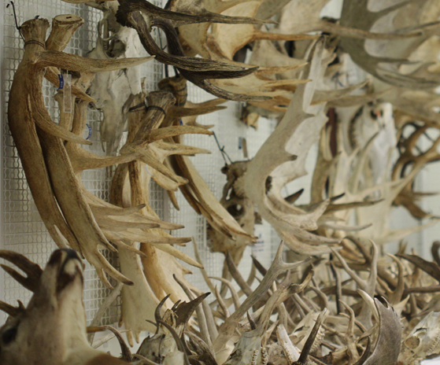

Total Evidence Trees
| Date | Author | Journal | Group | Taxa | |
| 2014 | Beck, RMD, Lee, MSY. | Proceedings B | Placentalia | 106 | |
| 2013 | Slater, GJ. | Methods in Ecology and Evolution | Mammaliaformes | 246 | |
| 2013 | Wood, HM, Matzke, NJ, Gillespie, RG, Griswold, CE. | Systematic Biology | Palpimanoid Spiders | 37 | |
| 2012 | Ronquist, F, Klopfstein, S, Vilhelmsen, L, Schulmeister, S, Murray, DL, and Rasnitsyn, AP. | Systematic Biology | Hymenoptera | 113 | |
| 2011 | Pyron, RA. | Systematic Biology | Lissamphibia | 75 |
1.Pyron 2011 Syst Biol proposes multiple trees and analysis on DataDryad.